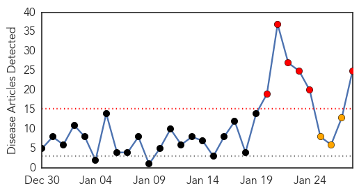
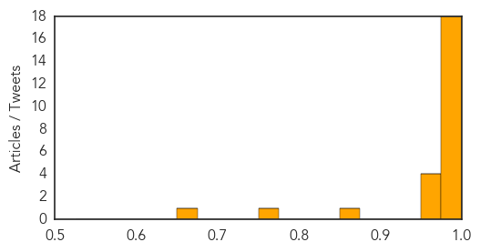

Swine Flu
30-Day Web Trend
6 alerts, 3 warnings

30-Day Twitter Trend
0 alerts, 0 warnings

Article Locations

Article Confidences
Top Articles:
- 1.000
- India swine flu outbreak 'kills 75'
- 1.000
- Swine flu spreads to Telangana, Andhra Pradesh districts
- 1.000
- 3 doctors at Lok Nayak down with swine flu
- 0.999
- Swine flu spreads in Haryana
- 0.999
- Pregnant woman critical, baby died in womb: Swine flu in AP
- 0.999
- Swine Flu Outbreak Takes its Toll in India; 75 Killed in 1 Month, 70 Fresh Cases Reported
- 0.999
- Swine flu deaths on the rise, 104 killed this year
- 0.999
- Delhi doctors plead for swine flu vaccinations as five fall prey to disease
- 0.998
- Four more die of swine flu in Hyderabad
- 0.998
- newkerala.com, Rajasthan News 12091
- 0.993
- Health department brings schools kids under scanner for H1N1
- 0.992
- In One Month, Rajasthan Records 27 Swine Flu Deaths
- 0.989
- Woman succumbs to swine flu, family cries negligence
- 0.988
- Andhra Pradesh reports two swine flu deaths, 24 cases
- 0.986
- H1N1 ‘Swine flu’ hitting India hard this year
- 0.985
- Woman succumbs to swine flu, family cries negligence
- 0.983
- H1N1 claims one more life in Rajasthan, Raje orders free testing facility
- 0.982
- H1N1 claims one more life, Vasundhara Raje orders free testing facility
- 0.974
- Winter retreat favours flu rise: Experts
- 0.965
- Congo fever: Thar Express passengers screened
- 0.964
- After outbreak in Telangana & Andhra Pradesh, 7 border districts on swine flu alert
- 0.959
- Gujarat swine flu: Death toll reaches 22 even as 170 cases registered
- 0.853
- Samples Pile Up as Swine Flu Testing Machine Breaks Down
- 0.759
- Swine flu claims one more in Ahmedabad
- 0.668
- Telangana: Swine flu kills 3 more, 54 new cases diagnosed
Top Tweets:
-
No tweets found for Jan 28, 2015
Yellow Fever
30-Day Web Trend
3 alerts, 0 warnings

30-Day Twitter Trend
0 alerts, 0 warnings

Article Locations

Article Confidences

Top Articles:
-
No articles found for Jan 28, 2015
Top Tweets:
-
No tweets found for Jan 28, 2015